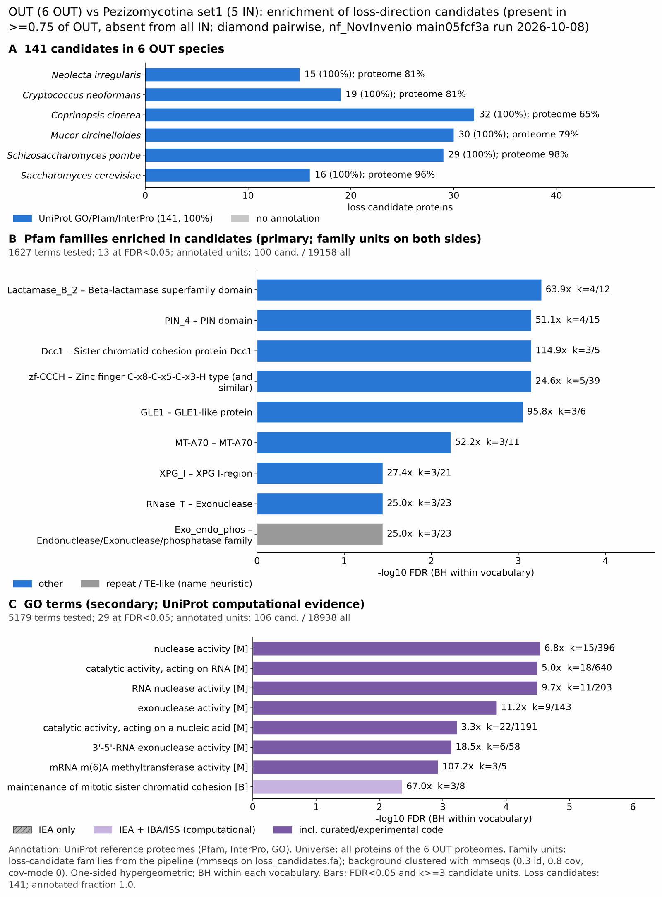

pezizo set1: functional enrichment (loss)
One-sided hypergeometric test per term; Benjamini-Hochberg FDR within each scope, level and vocabulary. Candidates are the loss candidates: gene families present in the OUT group and absent from the IN group. Universe: proteome. Background clustered: True (49026 sequences in 30890 clusters, mmseqs easy-cluster --min-seq-id 0.3 -c 0.8). Family level: one unit per candidate family and per background cluster.
Sources: Pfam: 2026-01-27-Pfam38.2; InterPro entries: 110.0; GO: releases/2026-07-26; analysis generated 2026-10-12T18:16:09. Source tables: studies/fungi/pezizo_set1/analysis/enrichment/outputs/loss/proteome_clustered.
Full record: PROVENANCE. Run report: report.html.
- Annotation provenance is not fully recorded: PROVENANCE.yaml lists the per-species annotation files and their checksums, but not the UniProt release they come from.
- GO results are secondary. GO annotations include computational evidence (IEA, IBA); the GO evidence column shows if a term has non-IEA support.
- Candidate families (pipeline clustering of candidates) and background clusters (mmseqs clustering of the background proteome) are made by different runs, so family-level counts are not fully comparable.
Summary figure

Annotation coverage
Fraction of proteins with at least one term per vocabulary. Universe = all proteins of the species; candidates = the candidate set.
| Species | Set | Proteins | Pfam | Pfam clan | InterPro | GO | Any |
|---|---|---|---|---|---|---|---|
| Nirr | universe | 5530 | 75.4% | 60.6% | 80.5% | 73.5% | 81.0% |
| Nirr | candidates | 15 | 93.3% | 86.7% | 100.0% | 100.0% | 100.0% |
| CneoH99 | universe | 6965 | 75.4% | 61.5% | 80.9% | 72.7% | 81.2% |
| CneoH99 | candidates | 19 | 94.7% | 73.7% | 100.0% | 94.7% | 100.0% |
| Ccin | universe | 13334 | 57.9% | 47.0% | 64.2% | 50.3% | 64.6% |
| Ccin | candidates | 32 | 87.5% | 75.0% | 100.0% | 90.6% | 100.0% |
| Mcir | universe | 12143 | 73.9% | 61.1% | 78.4% | 68.6% | 78.6% |
| Mcir | candidates | 30 | 93.3% | 70.0% | 100.0% | 83.3% | 100.0% |
| Spom | universe | 5129 | 89.2% | 69.6% | 91.5% | 98.0% | 98.3% |
| Spom | candidates | 29 | 89.7% | 86.2% | 100.0% | 100.0% | 100.0% |
| Scer | universe | 6066 | 84.0% | 65.3% | 87.8% | 95.0% | 95.8% |
| Scer | candidates | 16 | 81.2% | 68.8% | 100.0% | 100.0% | 100.0% |
| ALL_OUT | universe | 49167 | 72.8% | 58.7% | 77.7% | 71.1% | 79.6% |
| ALL_OUT | candidates | 141 | 90.1% | 76.6% | 100.0% | 93.6% | 100.0% |
Tests summary
Per vocabulary: terms with FDR < 0.05 / terms tested. Protein level counts proteins; family level counts candidate families and background clusters.
| Scope | Level | Cand. units | Pfam sig / tested | Pfam clan sig / tested | InterPro sig / tested | GO sig / tested |
|---|---|---|---|---|---|---|
| whole_set | family | 114 | 13 / 1627 | 4 / 382 | 32 / 3366 | 29 / 5179 |
| whole_set | protein | 141 | 26 / 3613 | 14 / 479 | 66 / 7899 | 73 / 6585 |
| Ccin | family | 32 | 0 / 308 | 0 / 224 | 0 / 767 | 0 / 2046 |
| Ccin | protein | 32 | 0 / 431 | 0 / 238 | 0 / 1039 | 0 / 2198 |
| CneoH99 | family | 19 | 0 / 219 | 0 / 189 | 0 / 586 | 0 / 1892 |
| CneoH99 | protein | 19 | 0 / 272 | 0 / 205 | 0 / 721 | 0 / 1998 |
| Mcir | family | 30 | 0 / 372 | 0 / 227 | 0 / 885 | 0 / 2147 |
| Mcir | protein | 30 | 0 / 619 | 0 / 270 | 0 / 1448 | 0 / 2566 |
| Nirr | family | 15 | 0 / 169 | 0 / 179 | 0 / 503 | 0 / 2187 |
| Nirr | protein | 15 | 0 / 194 | 0 / 182 | 0 / 563 | 0 / 2246 |
| Scer | family | 16 | 0 / 168 | 0 / 175 | 0 / 485 | 0 / 3448 |
| Scer | protein | 16 | 0 / 263 | 0 / 199 | 0 / 708 | 0 / 3723 |
| Spom | family | 19 | 0 / 156 | 0 / 170 | 0 / 456 | 0 / 3043 |
| Spom | protein | 29 | 7 / 222 | 5 / 180 | 14 / 601 | 31 / 3187 |
Top 25 Pfam terms (whole set, family level)
25 rows shown, ordered by FDR then p-value; 13 have FDR < 0.05 (bold).
| Term | Name | k / N cand. | n / M bg | Fold | FDR (BH) |
|---|---|---|---|---|---|
| PF12706 | Lactamase_B_2: Beta-lactamase superfamily domain | 4 / 100 | 12 / 19158 | 63.86 | 5.45e-04 |
| PF13638 | PIN_4: PIN domain | 4 / 100 | 15 / 19158 | 51.088 | 7.13e-04 |
| PF09724 | Dcc1: Sister chromatid cohesion protein Dcc1 | 3 / 100 | 5 / 19158 | 114.948 | 7.13e-04 |
| PF00642 | zf-CCCH: Zinc finger C-x8-C-x5-C-x3-H type (and similar) | 5 / 100 | 39 / 19158 | 24.562 | 7.13e-04 |
| PF07817 | GLE1: GLE1-like protein | 3 / 100 | 6 / 19158 | 95.79 | 8.88e-04 |
| PF05063 | MT-A70: MT-A70 | 3 / 100 | 11 / 19158 | 52.249 | 0.006 |
| PF00867 | XPG_I: XPG I-region | 3 / 100 | 21 / 19158 | 27.369 | 0.036 |
| PF00929 | RNase_T: Exonuclease | 3 / 100 | 23 / 19158 | 24.989 | 0.036 |
| PF03372 | Exo_endo_phos: Endonuclease/Exonuclease/phosphatase family | 3 / 100 | 23 / 19158 | 24.989 | 0.036 |
| PF04683 | Rpn13_ADRM1_Pru: Proteasome complex subunit Rpn13, Pru domain | 2 / 100 | 5 / 19158 | 76.632 | 0.036 |
| PF07973 | tRNA_SAD: Threonyl and Alanyl tRNA synthetase second additional domain | 2 / 100 | 5 / 19158 | 76.632 | 0.036 |
| PF17919 | RT_RNaseH_2: RNase H-like domain found in reverse transcriptase | 2 / 100 | 5 / 19158 | 76.632 | 0.036 |
| PF21093 | Nup188_N-subdom_III: Nucleoporin Nup188, N-terminal subdomain III | 2 / 100 | 6 / 19158 | 63.86 | 0.050 |
| PF00665 | rve: Integrase core domain | 2 / 100 | 8 / 19158 | 47.895 | 0.080 |
| PF17921 | Integrase_H2C2: Integrase zinc binding domain | 2 / 100 | 8 / 19158 | 47.895 | 0.080 |
| PF02096 | 60KD_IMP: 60Kd inner membrane protein | 2 / 100 | 9 / 19158 | 42.573 | 0.091 |
| PF09270 | BTD: Beta-trefoil DNA-binding domain | 2 / 100 | 9 / 19158 | 42.573 | 0.091 |
| PF09271 | LAG1-DNAbind: LAG1, DNA binding | 2 / 100 | 10 / 19158 | 38.316 | 0.107 |
| PF00078 | RVT_1: Reverse transcriptase (RNA-dependent DNA polymerase) | 2 / 100 | 11 / 19158 | 34.833 | 0.123 |
| PF14608 | zf-CCCH_2: RNA-binding, Nab2-type zinc finger | 2 / 100 | 15 / 19158 | 25.544 | 0.220 |
| PF00752 | XPG_N: XPG N-terminal domain | 2 / 100 | 19 / 19158 | 20.166 | 0.337 |
| PF02037 | SAP: SAP domain | 2 / 100 | 29 / 19158 | 13.212 | 0.739 |
| PF03800 | Nuf2: Nuf2 family | 1 / 100 | 5 / 19158 | 38.316 | 1.000 |
| PF07960 | CBP4: CBP4 | 1 / 100 | 5 / 19158 | 38.316 | 1.000 |
| PF09429 | Wbp11: WW domain binding protein 11 | 1 / 100 | 5 / 19158 | 38.316 | 1.000 |
Top 25 InterPro terms (whole set, family level)
25 rows shown, ordered by FDR then p-value; 25 have FDR < 0.05 (bold).
| Term | Name | k / N cand. | n / M bg | Fold | FDR (BH) |
|---|---|---|---|---|---|
| IPR045877 | Family:RNA-binding protein ZFP36-like | 5 / 114 | 11 / 21079 | 84.047 | 3.65e-06 |
| IPR029060 | Homologous_superfamily:PIN-like domain superfamily | 7 / 114 | 41 / 21079 | 31.569 | 3.65e-06 |
| IPR052626 | Family:SWT1 Transcriptional Regulator | 4 / 114 | 6 / 21079 | 123.269 | 1.35e-05 |
| IPR000571 | Domain:Zinc finger, CCCH-type | 7 / 114 | 82 / 21079 | 15.784 | 2.57e-04 |
| IPR036855 | Homologous_superfamily:Zinc finger, CCCH-type superfamily | 6 / 114 | 55 / 21079 | 20.171 | 3.45e-04 |
| IPR019128 | Family:Sister chromatid cohesion protein Dcc1 | 3 / 114 | 5 / 21079 | 110.942 | 7.35e-04 |
| IPR038910 | Family:Proline-rich protein Hua1-like | 3 / 114 | 5 / 21079 | 110.942 | 7.35e-04 |
| IPR002716 | Domain:PIN domain | 4 / 114 | 19 / 21079 | 38.927 | 0.001 |
| IPR012476 | Family:mRNA export factor GLE1-like | 3 / 114 | 6 / 21079 | 92.452 | 0.001 |
| IPR038506 | Homologous_superfamily:GLE1-like superfamily | 3 / 114 | 6 / 21079 | 92.452 | 0.001 |
| IPR050600 | Family:SETD3/SETD6 methyltransferase | 4 / 114 | 21 / 21079 | 35.22 | 0.001 |
| IPR050410 | Family:CCR4/nocturin mRNA turnover and transcription | 3 / 114 | 9 / 21079 | 61.635 | 0.004 |
| IPR008918 | Conserved_site:Helix-hairpin-helix motif, class 2 | 3 / 114 | 10 / 21079 | 55.471 | 0.005 |
| IPR001279 | Domain:Metallo-beta-lactamase | 4 / 114 | 30 / 21079 | 24.654 | 0.005 |
| IPR007757 | Family:MT-A70-like | 3 / 114 | 11 / 21079 | 50.428 | 0.006 |
| IPR036279 | Homologous_superfamily:5'-3' exonuclease, C-terminal domain superfamily | 3 / 114 | 20 / 21079 | 27.736 | 0.033 |
| IPR036866 | Homologous_superfamily:Ribonuclease Z/Hydroxyacylglutathione hydrolase-like | 4 / 114 | 51 / 21079 | 14.502 | 0.033 |
| IPR006086 | Domain:XPG-I domain | 3 / 114 | 22 / 21079 | 25.214 | 0.035 |
| IPR012337 | Homologous_superfamily:Ribonuclease H-like superfamily | 5 / 114 | 105 / 21079 | 8.805 | 0.035 |
| IPR006773 | Family:Proteasomal ubiquitin receptor Rpn13/ADRM1 | 2 / 114 | 5 / 21079 | 73.961 | 0.035 |
| IPR012947 | Domain:Threonyl/alanyl tRNA synthetase, SAD | 2 / 114 | 5 / 21079 | 73.961 | 0.035 |
| IPR018163 | Homologous_superfamily:Threonyl/alanyl tRNA synthetase, class II-like, putative editing domain superfamily | 2 / 114 | 5 / 21079 | 73.961 | 0.035 |
| IPR038633 | Homologous_superfamily:Proteasomal ubiquitin receptor Rpn13/ADRM1, Pru domain superfamily | 2 / 114 | 5 / 21079 | 73.961 | 0.035 |
| IPR041577 | Domain:Reverse transcriptase/retrotransposon-derived protein, RNase H-like domain | 2 / 114 | 5 / 21079 | 73.961 | 0.035 |
| IPR044868 | Domain:Rpn13/ADRM1, Pru domain | 2 / 114 | 5 / 21079 | 73.961 | 0.035 |
Top 15 GO terms (whole set, family level) — secondary, computational evidence (IEA/IBA) included
15 rows shown, ordered by FDR then p-value; 15 have FDR < 0.05 (bold).
| Term | Name | k / N cand. | n / M bg | Fold | FDR (BH) | GO evidence | Families with non-IEA |
|---|---|---|---|---|---|---|---|
| GO:0004518 | molecular_function:nuclease activity | 15 / 106 | 396 / 18938 | 6.767 | 2.92e-05 | has_non_IEA | 5 |
| GO:0140098 | molecular_function:catalytic activity, acting on RNA | 18 / 106 | 640 / 18938 | 5.025 | 3.23e-05 | has_non_IEA | 6 |
| GO:0004540 | molecular_function:RNA nuclease activity | 11 / 106 | 203 / 18938 | 9.681 | 3.23e-05 | has_non_IEA | 4 |
| GO:0004527 | molecular_function:exonuclease activity | 9 / 106 | 143 / 18938 | 11.244 | 1.42e-04 | has_non_IEA | 3 |
| GO:0140640 | molecular_function:catalytic activity, acting on a nucleic acid | 22 / 106 | 1191 / 18938 | 3.3 | 6.00e-04 | has_non_IEA | 7 |
| GO:0000175 | molecular_function:3'-5'-RNA exonuclease activity | 6 / 106 | 58 / 18938 | 18.482 | 7.35e-04 | has_non_IEA | 2 |
| GO:0001734 | molecular_function:mRNA m(6)A methyltransferase activity | 3 / 106 | 5 / 18938 | 107.196 | 0.001 | has_non_IEA | 1 |
| GO:0016896 | molecular_function:RNA exonuclease activity, producing 5'-phosphomonoesters | 6 / 106 | 66 / 18938 | 16.242 | 0.001 | has_non_IEA | 2 |
| GO:0004532 | molecular_function:RNA exonuclease activity | 6 / 106 | 68 / 18938 | 15.764 | 0.001 | has_non_IEA | 2 |
| GO:0008408 | molecular_function:3'-5' exonuclease activity | 6 / 106 | 82 / 18938 | 13.073 | 0.003 | has_non_IEA | 2 |
| GO:0034088 | biological_process:maintenance of mitotic sister chromatid cohesion | 3 / 106 | 8 / 18938 | 66.998 | 0.004 | has_non_IEA | 1 |
| GO:0008174 | molecular_function:mRNA methyltransferase activity | 3 / 106 | 9 / 18938 | 59.553 | 0.006 | has_non_IEA | 1 |
| GO:0036396 | cellular_component:RNA N6-methyladenosine methyltransferase complex | 3 / 106 | 11 / 18938 | 48.726 | 0.011 | has_non_IEA | 1 |
| GO:0071028 | biological_process:nuclear mRNA surveillance | 5 / 106 | 70 / 18938 | 12.761 | 0.016 | has_non_IEA | 3 |
| GO:0031390 | cellular_component:Ctf18 RFC-like complex | 3 / 106 | 13 / 18938 | 41.229 | 0.016 | has_non_IEA | 1 |
Actin cytoskeleton controls
Known actin-related families and how many of their proteins pass each filter. Protein ID columns are left out.
| control | pfam_ids | desc_regex | OUT_universe | OUT_in_matrix | OUT_pass_outgroup_rule | candidates | near_miss_in1 | near_miss_in2 | n_Nirr | n_CneoH99 | n_Ccin | n_Mcir | n_Spom | n_Scer | n_Amega | n_Ncra | n_Afum | n_Ztri | n_Cimm |
|---|---|---|---|---|---|---|---|---|---|---|---|---|---|---|---|---|---|---|---|
| Arp2/3 ARPC2 (P34-Arc) | PF04045 | 6 | 6 | 6 | 0 | 0 | 0 | 1 | 1 | 1 | 1 | 1 | 1 | 0 | 1 | 1 | 1 | 1 | |
| Arp2/3 ARPC3 (P21-Arc) | PF04062 | 5 | 5 | 5 | 0 | 0 | 0 | 0 | 1 | 1 | 1 | 1 | 1 | 0 | 1 | 1 | 1 | 1 | |
| Arp2/3 ARPC4 | PF05856 | 6 | 6 | 6 | 0 | 0 | 0 | 1 | 1 | 1 | 1 | 1 | 1 | 0 | 1 | 1 | 1 | 1 | |
| Arp2/3 ARPC5 (P16-Arc) | PF04699 | 6 | 6 | 6 | 0 | 0 | 0 | 1 | 1 | 1 | 1 | 1 | 1 | 0 | 1 | 1 | 1 | 1 | |
| Arp2/3 ARPC1 (description only) | arp2/3 complex.*(41|p41|subunit 1)|ARPC1 | 1 | 1 | 1 | 0 | 0 | 0 | 1 | 0 | 0 | 0 | 0 | 0 | 0 | 0 | 0 | 0 | 0 | |
| Arp2 / Arp3 (description only) | actin-related protein (2|3)\b|\bARP[23]\b | 36 | 36 | 36 | 0 | 0 | 0 | 6 | 5 | 5 | 6 | 7 | 7 | 4 | 6 | 8 | 7 | 7 | |
| WAVE complex NCKAP1 | PF09735 | 0 | 0 | 0 | 0 | 0 | 0 | 0 | 0 | 0 | 0 | 0 | 0 | 0 | 0 | 0 | 0 | 0 | |
| WAVE complex CYFIP (FragX_IP) | PF05994 | 0 | 0 | 0 | 0 | 0 | 0 | 0 | 0 | 0 | 0 | 0 | 0 | 0 | 0 | 0 | 0 | 0 | |
| WAVE complex ABI | PF07815|PF27594 | 0 | 0 | 0 | 0 | 0 | 0 | 0 | 0 | 0 | 0 | 0 | 0 | 0 | 0 | 0 | 0 | 0 | |
| SCAR/WAVE (SCAR_helical) | PF27569 | 0 | 0 | 0 | 0 | 0 | 0 | 0 | 0 | 0 | 0 | 0 | 0 | 0 | 0 | 0 | 0 | 0 | |
| WASP family (WH1) | PF00568 | 9 | 8 | 8 | 0 | 0 | 0 | 1 | 1 | 2 | 3 | 1 | 1 | 0 | 1 | 1 | 1 | 1 | |
| WH2 motif (WASP, WAVE, others) | PF02205 | 12 | 12 | 9 | 0 | 0 | 1 | 2 | 2 | 2 | 2 | 2 | 2 | 0 | 1 | 3 | 3 | 2 | |
| Formin FH2 | PF02181 | 17 | 16 | 12 | 0 | 0 | 0 | 1 | 1 | 2 | 8 | 3 | 2 | 0 | 1 | 1 | 1 | 1 | |
| Formin Drf_GBD / Drf_FH3 / Drf_DAD | PF06371|PF06367|PF06345 | 20 | 20 | 13 | 0 | 0 | 0 | 2 | 2 | 3 | 8 | 4 | 1 | 0 | 2 | 2 | 2 | 2 | |
| Ena/VASP (VASP_tetra) | PF08776 | 0 | 0 | 0 | 0 | 0 | 0 | 0 | 0 | 0 | 0 | 0 | 0 | 0 | 0 | 0 | 0 | 0 | |
| Coronin (description only) | coronin | 6 | 6 | 6 | 0 | 0 | 0 | 1 | 1 | 1 | 1 | 1 | 1 | 1 | 1 | 1 | 1 | 1 | |
| Cortactin (HS1_rep) | PF02218 | 0 | 0 | 0 | 0 | 0 | 0 | 0 | 0 | 0 | 0 | 0 | 0 | 0 | 0 | 0 | 0 | 0 | |
| Myosin 2 tail (Myosin_tail_1) | PF01576 | 1 | 1 | 1 | 0 | 0 | 0 | 0 | 0 | 1 | 0 | 0 | 0 | 0 | 0 | 1 | 0 | 0 | |
| Myosin head (all myosins) | PF00063 | 41 | 41 | 41 | 0 | 0 | 0 | 5 | 4 | 5 | 17 | 5 | 5 | 0 | 4 | 4 | 5 | 4 |
Page written by bin/generate_enrichment_page.py.